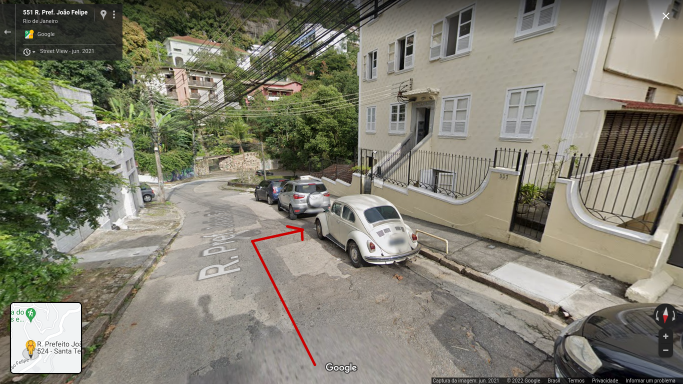

ONIBUS
Pegar os onibus 006 ou 007 na rua Gomes Freira, quase esquina com a Riachuelo, Lapa.


Saltar no Largo do França(vai salta bem na cabine da policia de tijolinho) e virar a direita da cabine de policia.
Virar a esquerda, na Prefeito João Felipe(só segui a placa Laranjeira/Rio Cumprido)
ATENÇÃO: Não seguir em frente, entrada para a comunidade do Fallet!!!!
Continuar em frente, meu predio é logo na curva, predio com escada em ponte.
